政治文化論
ガイダンス＆政治参加
宋 財泫
関西大学総合情報学部
2024-08-26
講義概要
自己紹介
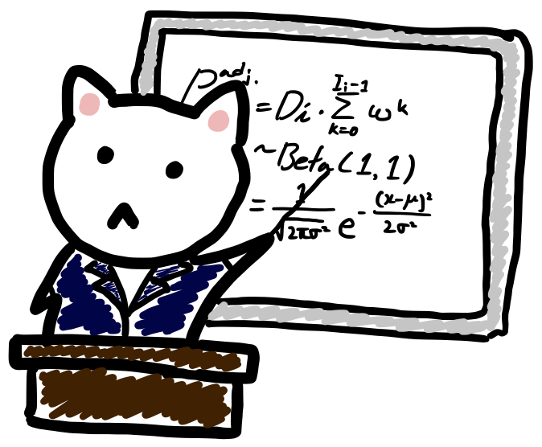
- 宋 財泫 (SONG JAEHYUN)
- 専門は政治行動論、選挙研究、政治学方法論
- 趣味はゲームとラーメン屋巡り
- 好きなラーメンは家系と二郎系、汁なし全般
- 最近やっているゲームはFF XIV
内容（予定）
| 年月日 | 内容 | |
|---|---|---|
| 2024/8/26（月） | 1限 | ガイダンス、政治参加 |
| 2限 | 政治参加（続き） | |
| 2024/8/27（火） | 1限 | 投票選択 |
| 2限 | 投票選択（続き） | |
| 2024/8/28（水） | 1限 | 前半の復習 |
| 2限 | 選挙と情報 | |
| 2024/8/29（木） | 1限 | 選挙と政策 |
| 2限 | 選挙と経済 | |
| 2024/8/30（金） | 1限 | 政治学の方法 |
| 2限 | 後半の復習 |
宋の担当分について
- 全日程において1〜2限目に実施します。
- この授業が終わったら3〜5限目は大学院の授業があるので、昼食および準備時間を考慮し、やや早めに授業を終わらせます。
- これによる授業開始時間の前倒しはございません。
- 水曜日の前半、金曜日の後半は復習です。
- もう一度解説して欲しい箇所のアンケートを実施し、リクエストの多い箇所をもう一度解説します。
- 水曜日の前半：政治参加＆投票選択
- 金曜日の後半：選挙と情報・政策・経済＆政治学の方法
- 小レポートについては最終日に案内します。
授業資料について
宋のホームページから閲覧できます。
- https://www.jaysong.net
- Teaching \(\rightarrow\) 2024年度の「政治文化論」の下段のリンクをクリック
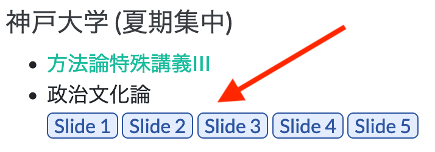
宋の政治学
[T]he authoritative allocation of values for a society
- 政治とは「社会に対する価値の権威的配分」（Easton 1953）
- 「価値のあるもの」\(=\) 限りのあるもの
- 無限に存在し、非排他的なものは配分の対象にならない。
- 例）議席、領土、石油、駅、ビュッフェの中トロ、カラオケの残り5分、…
- 誰かが得をすれば、誰かは損する
- \(\Rightarrow\) 政治の世界において万人は幸福になることはできない。
- 方法論的個人主義に基づき、合理的選択論の立場から政治を理解する。
- 例）合理的有権者 = 自分の効用を最大化しようとする有権者
政治参加
政治参加
- 政府に影響を与えることを目的に何らかの行動を起こすこと
- 投票参加
- 投票外参加（Verba et al. 1978）
- 選挙活動
- 市民活動
- 個別接触
- 本講義では主に投票参加に注目
投票参加
投票参加の重要性
- 投票参加の意味
- 自分にとって望ましい政策を実現してくれそうな選択肢を選ぶこと
- 棄権の意味
- 全ての政策を政治家/政府に委任することを意味する。
- 棄権の政治的帰結
- 棄権者は票にならないため、（候補者自身の）当選確率への影響がゼロ
- 政党、政治家にとって棄権者の望みを実現する誘引なし
- 政党、政治家は投票者のための政策を掲げる。
- 棄権は有権者の政策応答性を低下させる。
日本における投票参加
- 国家間（cross-national）比較
- Institute for Democracy and Electoral Assistance（IDEA）が公開している各国の投票率データ
- 直近の議会選挙（議院内閣制）と大統領選挙（大統領制）
- 両院制の場合、下院選挙
日本の国政選挙の投票率
国家間比較

国家間比較（OECD加盟国のみ）
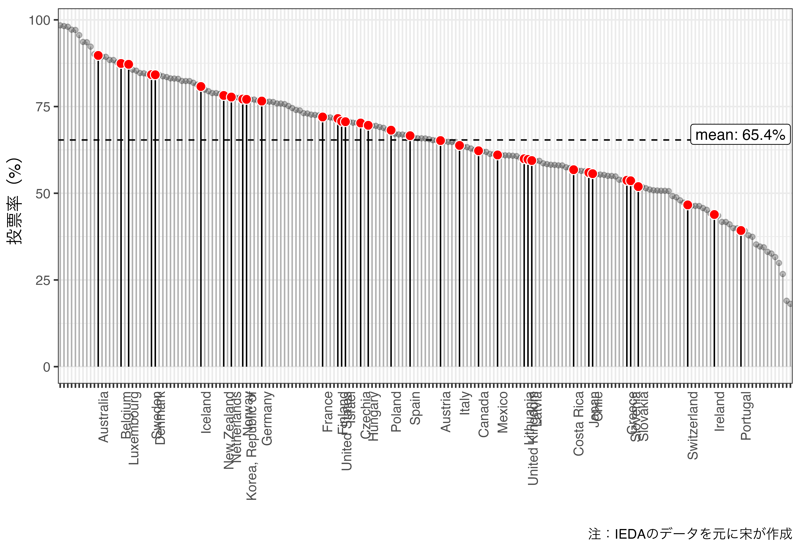
日本における投票参加の実態
- 戦後における継続的な低下
- 衆院選：72.1%（1946年） \(\rightarrow\) 55.9%（2021年） 16.2%p \(\downarrow\)
- 参院選：72.2%（1950年） \(\rightarrow\) 52.1%（2022年） 20.1%p \(\downarrow\)
- 投票率の経時的な低下は多くの国で観察される。
- 国家間比較
- 日本の投票参加は平均を下回る（約10%p低い）
- （データ内の）193カ国間比較の場合、140位
- 赤道ギニアの98.4%（2022年） \(\sim\) ハイチの18.1%（2016年）
- OECD Top3：オーストラリア、ベルギー、ルクセンブルク \(\rightarrow\) 義務投票制
誰が投票に参加するのか
社会経済的要因と投票参加
- 社会経済的状況（socioeconomic status; SES）
- 性別
- 年齢
- 居住地域
- 学歴
- 所得
- 職業
- 宗教
- 人種
- 配偶者の有無
- 世帯構成
- …
- 男性ほど投票する?高齢者ほど投票する?都市部ほど投票しない?
- CSES Module 5から確認
性別
約4%pの差はあるものの、統計的に有意な差ではない（\(p\) = 0.061）。
- 統計的有意性については今後解説
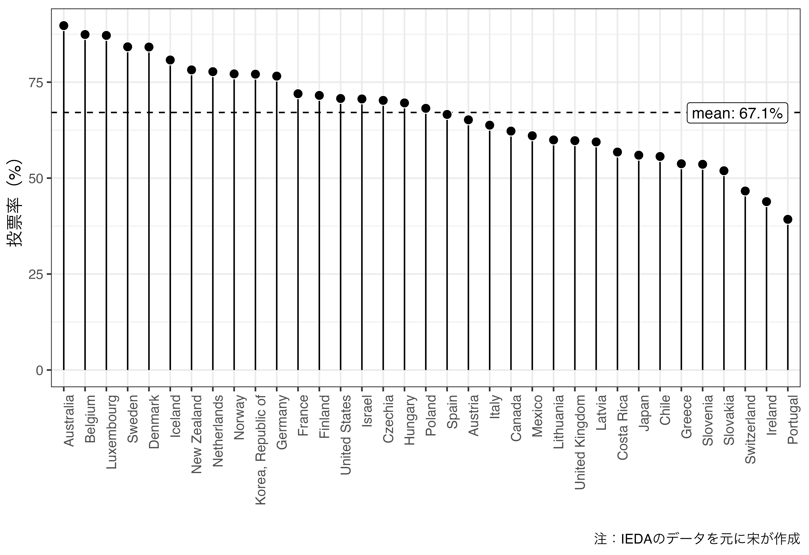
年齢
- 高齢者ほど投票率が高い傾向があり、統計的に有意な関係（\(\tau\) = 0.198; \(p\) < 0.001）
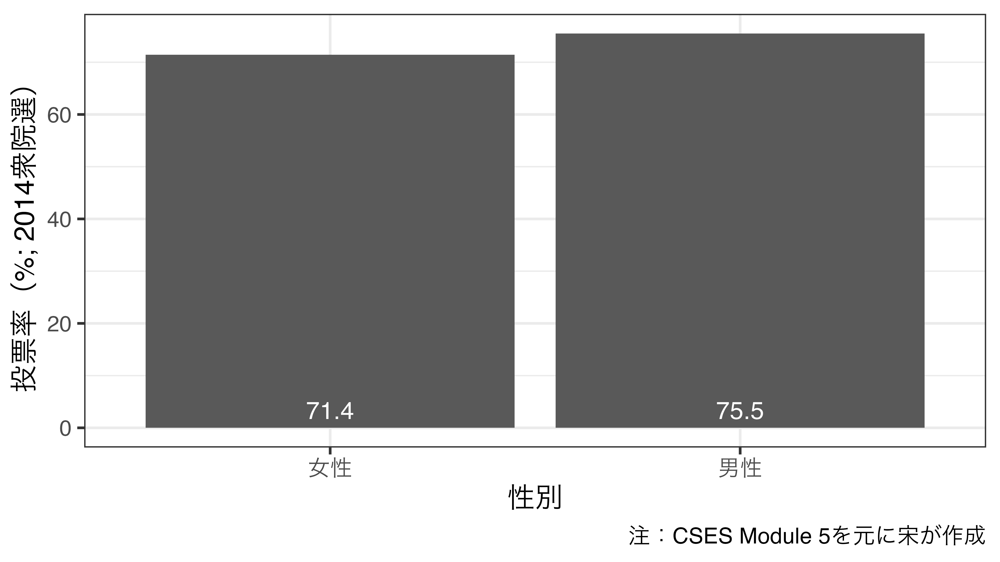
学歴
- 高学歴ほど投票率が高い傾向があり、統計的に有意な関係（\(p\) < 0.001）
- 若年層において学歴による差がより大きい傾向
世帯収入
- 世帯収入と投票率の間に統計的に有意な関係なし（\(p\) = 0.331）
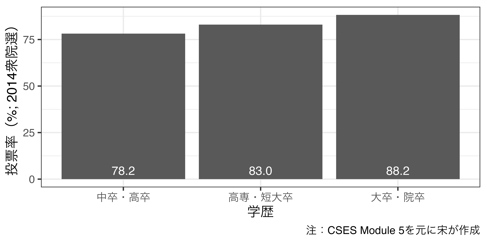
居住地域
- 居住地域の規模と投票率の間に統計的に有意な関係はなし（\(p\) = 0.161）
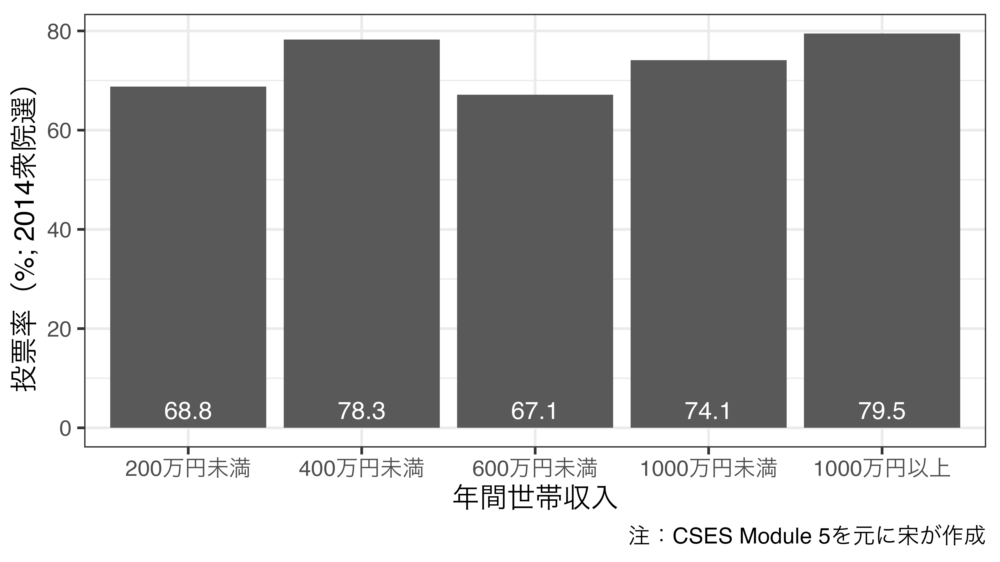
配偶者の有無
- 配偶者の有無と投票率の間に統計的に有意な関係あり（\(p\) < 0.001）
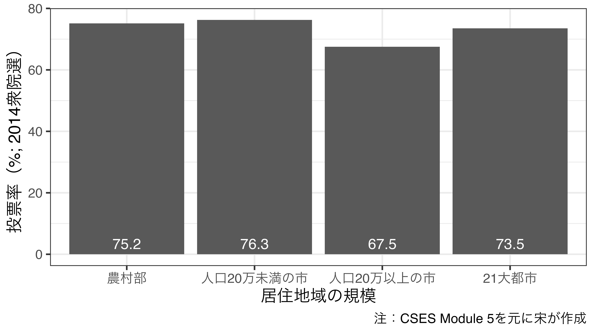
職業
- 職業と投票率の間に統計的に有意な関係はなし（\(p\) = 0.583）
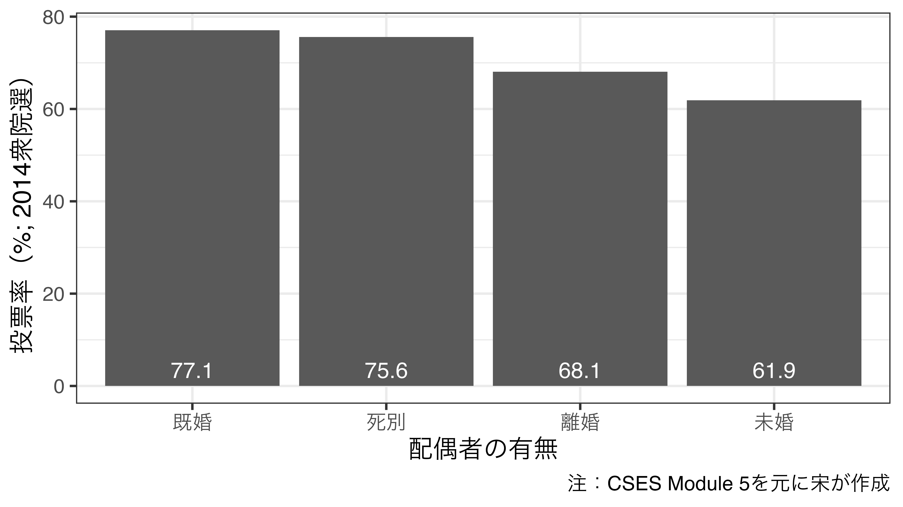
社会経済的状況と投票参加
- これまで紹介した傾向は相関であり、因果関係でないことに注意
- 因果関係が存在する可能性もあるが、これだけではなんとも言えない
- 内生性を考慮した分析が必要（内生性については今後解説）
- 先行研究によると…
- 男性の方がより投票率が高い（Inglehart and Norris 2003）
- 高齢者ほど投票率が高い（逆U字）傾向（Verba and Nie 1972; Dalton 2017）
- 都市部ほど投票率が低い傾向（Richardson 1974; Dahl and Tufte 1973）
- 高学歴ほど投票率が高い傾向（Nie, Junn, and Stehlik-Barry 1996）
- 数え切れないほどの先行研究が存在し、以上の結果を批判する研究も多数存在
投票参加：投票参加の利益（B）
合理的有権者の投票参加
\[ R = B - C \]
- \(R > 0\)の場合、有権者は投票する。
- \(B\)：投票から得られる利益（Benefit）
- \(C\)：投票の費用（Cost）
- 利益が費用を上回ると…（\(B > C\)）
- \(B - C > 0\)のため投票する。
- 利益が費用と同じか、下回ると…（\(B \leq C\)）
- \(B - C \leq 0\)のため棄権する。
投票から得られる利益
- 自分が望む政策が実現された場合の利益ではない。
- それぞれの候補者から得られる効用（利益）の「差」が重要
- 例1）候補者A、Bが当選した場合、得られる利益がそれぞれ10と5
- Aが当選した方が5単位分高い。
- より高い利益を得るために投票する意義あり
- 例2）候補者A、Bが当選した場合、得られる利益がそれぞれ5と5
- 誰が当選しても得られる利益は同じ
- （少なくとも自分にとって）投票の意味がない。
候補者の位置と利益の関係（1）
- 自分と候補者間の距離に差がある場合
- 距離が近いほど、高い利益が得られると仮定（近接性モデル）
- 自分の利益ががピッタリと実現される選択肢はない
- ただし、候補者Aが当選した方がBが当選するよりもマシ
- Aの方がBに比べ自分に近いから
- 候補者Bが当選すると困るので、候補者Aを当選させる必要
- \(\Rightarrow\) 投票参加の誘引が増加（＝\(B\)が増加）
- ただし、候補者Aが当選した方がBが当選するよりもマシ
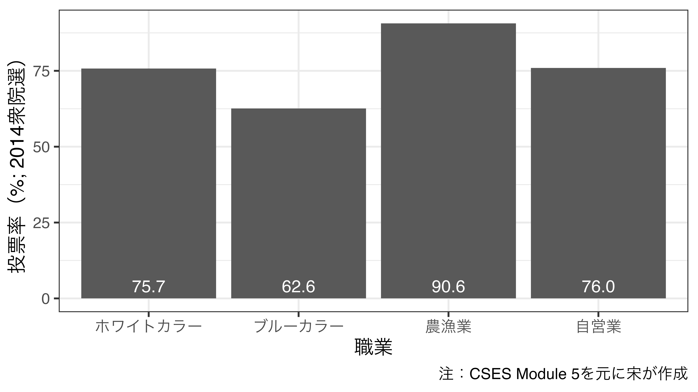
候補者の位置と利益の関係（2）
- どの候補者も同じ政策を掲げている場合
- 候補者Aとの距離 = 候補者Bとの距離
- 誰が当選しても同じ利益が得られるから
- \(=\) 投票に行っても行かなくても得られる利益は同じ
- 投票参加の誘引が低下（＝\(B\)が低下）
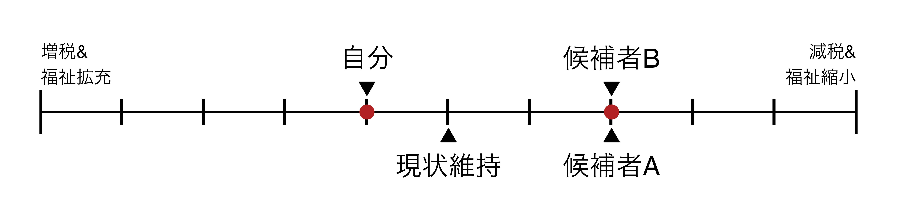
候補者の位置と利益の関係（3）
- 得られる利益が同じ場合（その2）
- 候補者Aとの距離 = 候補者Bとの距離
- 誰が当選しても同じ利益が得られるから
- \(=\) 投票に行っても行かなくても得られる利益は同じ
- 投票参加の誘引が低下（＝\(B\)が低下）
投票参加：投票参加の費用（C）
2種類のコスト
- 投票所に足を運ぶ労力や時間、金銭的費用
- 機会費用 (投票に行かないことで得られる利益)も含まれる
- 投票所の位置（距離、高低）、天気、年齢、身体の障害など
- 候補者や政党に関わる情報を収集する費用
- 投票所で票を投げるためには「誰に投票するか」を決める必要
- そのためには各候補者や政党に関する情報が必要であり、認知的負荷が発生する。
以上のコスト（\(C\)）が利益（\(B\)）を上回ると有権者は棄権する。
コストの例
- 投票所までの距離
- 投票所の数と投票率間の正の関係（松林 2016）
- 投票時間
- 投票時間の延長による投票率上昇（品田 1999、三船 2002）
- 投票時間の短縮による投票率低下（松林 2016）
- 天気
- 台風、雨などによる投票率の低下
- 降水量と投票率（Cooperman 2017）

情報収集に関わるコスト
- 政治知識量が豊富な有権者ほど効率的に情報収集が可能
- 有権者の社会経済的要因 \(\rightarrow\) 政治知識量 \(\rightarrow\) 情報収集のコスト
- 社会経済的要因と政治知識量間の関係
- 例1) 教育水準（Leighley and Nagler 2013）
- 教育水準が高いと情報処理能力、学習意欲が高い
- 教育水準が低いと情報の入手や処理に限界 → 低い投票率
- 例2) 年齢
- 若い有権者にとって政治は未知の世界
- 年齢を重ねていくことで追加的に必要な情報量が減少 → 高い投票率
政治知識量と投票参加
- JES IVのデータから見る政治知識量と投票参加の関係
- 政治に関するクイズ6問の正解数（0 = 低; 1〜3 = 中; 4〜6 = 高）
- 政治知識量が多いほど、高い投票参加
- cf) 2009年の投票率：69.28%（社会的望ましさバイアス + 選択バイアス）
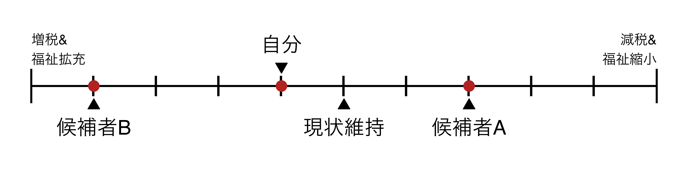
投票参加：1票の重みと投票参加のパラドックス（PとD）
ここまでの内容
\[ R = B - C \]
\(B\)：投票参加から得られる利益（各選択肢がもたらす利益の差分）
\(C\)：投票参加に伴う費用
私が投票に参加すれば、ちゃんと\(B\)分の利益が確実に得られるか。
- 自分の一票が\(B\)分の利益をもたらす確率（\(P\)）を考慮する必要がある。
- 確実に得られる利益でない場合、期待利益（expected utility）を計算
- 自分が投票しなくても\(B\)分の利益が得られる場合、「参加から得られる利益」は0となる。
\[ R = P \cdot B - C \]
1票の価値
- 自分の一票が\(B\)分の利益をもたらす確率
- \(=\) 自分の一票によって当選者が決まる確率
- \(=\) 1位と2位の票が同数になる確率（自分の票を除く）
- 1位と2位の票が同数になる確率
- 最も接戦になりやすい状況：全ての有権者が無作為に投票先を決める場合
- （自分の除く）有権者が2人、候補者が2人（AとB）の場合
- 実現可能な選挙結果は\(\{A, A\}\)、\(\{A, B\}\)、\(\{B, A\}\)、\(\{B, B\}\)
- 同数になる確率は\(\frac{2}{4} =\) 50%
有権者が4人なら?
- 答え：\(\frac{6}{16} =\) 37.5%
| 有権者1 | 有権者2 | 有権者3 | 有権者4 |
|---|---|---|---|
| A | A | A | A |
| B | A | A | A |
| A | B | A | A |
| B | B | A | A |
| A | A | B | A |
| B | A | B | A |
| A | B | B | A |
| B | B | B | A |
| A | A | A | B |
| B | A | A | B |
| A | B | A | B |
| B | B | A | B |
| A | A | B | B |
| B | A | B | B |
| A | B | B | B |
| B | B | B | B |
有権者が10人なら?100人なら?
- 選択肢がAとBのみ存在し、\(N\)人の有権者が50%の確率で候補者Aに投票する場合、候補者Aが\(\frac{N}{2}\)票を獲得する確率：\(\binom{N}{N/2} 0.5^{N} = \frac{N!}{(N/2)!(N/2)!} 0.5^N\)
- 有権者が10人なら… \(\Rightarrow\) 24.6%
- 有権者が100人なら… \(\Rightarrow\) 8.0%
- 現実の選挙区の規模はより大きい
- 東京13区（482,445名）：0.115%
- 兵庫1区（393,614名）：0.127%
- 鳥取1区（231,313名）：0.166%
- 最も一票の価値が高まりやすい環境下でも、「自分の一票が選挙結果を左右する確率」は極めて小さい
更に小さいP
- もし、人々が50.5%の確率で候補者A、49.5%の確率で候補者Bを選ぶのであれば…
- それでも同点になる確率は\(\binom{N}{N/2} 0.505^{N/2} 0.495^{N/2}\)
| 有権者数 | 同点になる確率 |
|---|---|
| 10人 | 24.59707277319141738303% |
| 100人 | 7.91922646102830540826% |
| 1000人 | 2.39947195339489471877% |
| 10000人 | 0.48391725176418198817% |
| 100000人 | 0.00169964407785170224% |
| 231313人 | 0.00000157294337948602% |
| 393614人 | 0.00000000036037754110% |
| 482445人 | 0.00000000000383313565% |
- 参考）2024年8月5日現在の政党支持率（NHK）
- 自民 29.9%、立民 5.2%、公明 3.3%、共産 2.6%、維新 2.4%、…
投票参加のパラドックス
- \(P\)は（実質）0であるため、\(B\)の大きさと関係なく、\(P \cdot B\)は（実質）0
- 投票参加の費用は必ず発生するため\(C > 0\)
- \(R < 0\) \(\leadsto\) 棄権
\[ \underbrace{R}_{\tiny{\text{Negative}}} = \underbrace{P \cdot B}_{\tiny{\simeq \text{0}}} - \underbrace{C}_{\tiny{\text{Positive}}} \]
- \(R\)が0未満であるため、、有権者は投票に参加する誘引を持たない
- \(\Rightarrow\) 投票参加のパラドックス
- それでも国政選挙の投票率はほとんどの場合、50%を上回る \(\rightarrow\) なぜ？
「P」の再解釈
- \(P\)を「主観的」な確率として解釈
- 厳密な（=客観的な）意味での\(P\)は実質的にゼロ
- ただし、「主観的」な確率であれば、人々によって異なるはず
- 啓発活動の主な目的
啓発活動の効果
- 秦・SONG (2020)の研究
- 「あなたの一票は重い！」\(\Rightarrow\) 荷が重い？
- 自分は政治について詳しくないと思う有権者において顕著
- オンライン・フィールド実験による検証
- 政治学における実験の詳細は今後、紹介
- 2019年参院選の直前に有権者にランダムのメッセージを提示
- 統制群：何も見せない
- 処置群：あなたの一票が社会と政治を変えます
- 選挙直後に同じ回答者を対象に調査を行い、投票参加有無を測定
啓発活動の効果
啓発メッセージの有無による投票率の（実質的な）差は見られない。
- 若年層のみを対象とした松林（2023）の研究でも類似した結果
- 「自分は政治に詳しくない」と感じる有権者 \(=\) 「荷が重い」と感じる有権者?
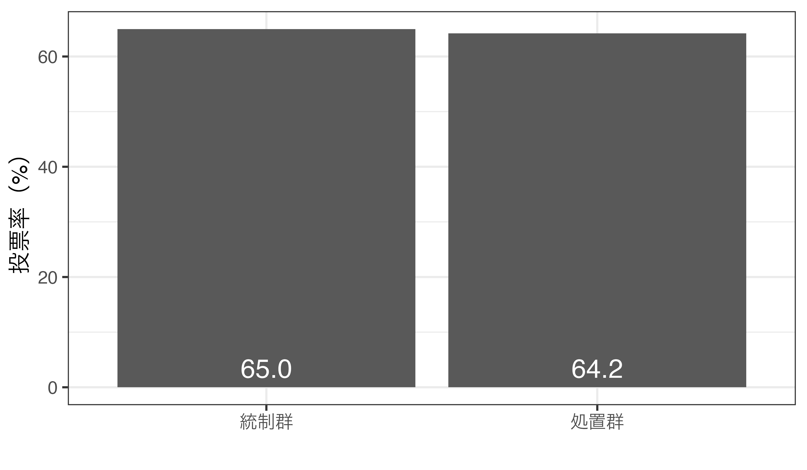
啓発活動の効果（条件付き効果）
- 政治に詳しいと思う有権者はメッセージと関係なく高い投票率
- 政治に詳しくないと思う有権者は逆効果（約11%p\(\downarrow\)）
「D」の導入
\[ R = P \cdot B - C + D \]
- \(D\)項の導入（投票から得られる満足感 = satisfaction）
- 投票所に足を運び、意思表明することから得られる満足感
- 投票義務感
- 政治体制に忠誠を誓うことで得られる満足感
- 政治体制内で自分の有効性を確認することで得られる満足感
- 党派性の表明から得られる満足感
- \(P \cdot B \simeq 0\)のため、\(D > C\)の場合、投票参加
\(P\)項以外の要因への刺激
主観的な\(P\)を上げるメッセージでなく、以下のようなメッセージも挿入
- 統制群：何も見せない
- 処置群1：あなたの一票が社会と政治を変える（\(P\)項を刺激）
- 処置群2：日本における投票率の低下が著しい（\(D\)項を刺激）
- 処置群3：日本は世界の中で非常に投票率が低い（\(D\)項を刺激）
- 処置群4：棄権することは自分の利益代表を放棄すること（\(B\)項を刺激）
啓発活動と投票参加（続き）
有権者の\(D\)を刺激するメッセージの場合、投票率が約5%p\(\uparrow\)
- 自分は政治に詳しいと思う有権者の場合、刺激と関係なく高い投票率
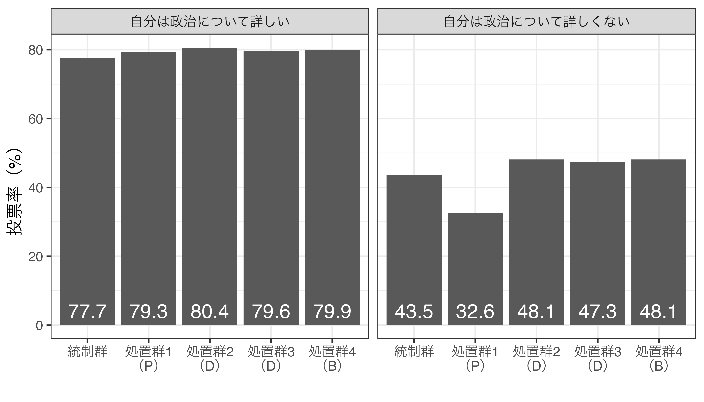
投票参加と政策
投票参加と政策
- 政治家の目標は再選
- 再選のためには「票」が必要
- 票を得るためには、投票者の望みを実現する必要
- 棄権者は？
- 投票者と棄権者
- 投票者：政策応答性が高い
- 落選した候補者に投票した場合でも、投票結果は「シグナル」と機能
- 棄権者：政策応答性が低い
- 投票者：政策応答性が高い
投票者は有権者の縮図か
もし、投票者が有権者の縮図であれば、棄権者の政策応答性も確保可能
- 例）有権者100人の男女比が50:50であり、
- 投票者の性別が男性50、女性30であれば、男性に優しい政策が出来やすい。
- 投票者の性別が男性30、女性30であれば、両性別のための政策が出来やすい。
- 投票者は有権者の縮図か
- 2016年参院選の例）JES IV（Wave 14）の場合、投票者の男女比は54.4:45.6
- ただし、実際の男女比は48.3:51.7程度
- \(\Rightarrow\) 男性が過剰代表されている（世論調査の代表性には要注意）
社会経済的状況と政策応答性
- 社会経済的状況と投票参加の関係
- 男性、高収入、高学歴ほど投票参加 \(\rightarrow\) 過剰代表されやすい
- 過剰代表される有権者ほど、政策応答性が高い傾向
- 投票率100%になれば「有権者\(=\)投票者」となり、代表性が高まる。
- 投票率100%（または、ほぼ100%）は不可能?
- 投票率向上の劇薬、皮下注射、魔法の弾丸
- \(\Rightarrow\) 義務投票制（compulsory voting）
- ただし、実効性のある義務投票制と実効性のない義務投票制がかることには注意
投票率100%世界では何が変わるか
- 例1) オーストラリアにおける義務投票制の導入（Fowler 2013）
- 義務投票制の導入により、投票率が大幅に向上
- 連邦議会選挙は1925年選挙から義務投票制が導入され59.36% \(\rightarrow\) 91.39%
- 新しく参入する有権者の票を獲得するために、その人々のための政策を掲げる必要
- 低SESに属する有権者の投票参加 \(\rightarrow\) 低SESに嬉しい福祉支出の増加
- 義務投票制の導入により、投票率が大幅に向上
- 例2）ベネズエラにおける義務投票制の廃止（Carey and Horiuchi 2017）
- 義務投票制の廃止が不平等を引き起こした。
- 例3）Chong and Olivera（2008）の91カ国比較研究
- 義務投票制の導入により、所得格差（ジニ係数）が縮小
- 以上の議論を批判する研究も多数存在（Hoffman, León, and Lombardi 2017; Maroto and Došek 2018など）
投票外参加
投票外参加の種類
投票外参加：投票参加を除く全ての政治参加
- 世界価値観調査（world value survey）の例
- 請願書署名（signing a petition）
- ボイコット（joining in boycotts）
- デモ（attending lawful/peaceful demonstration）
- ストライキ（joining unofficial strikes）
- 建物・工場の占拠（occupying builidngs or factories）
- やったことがある（1）、やるかも知れない（0）、絶対にやらない（0）
- 他にも立候補、選挙運動の手伝い、家に政党・政治家のポスターを貼る行為なども投票外参加に含まれる。
国家間比較（Wave 7）
日本における投票外参加
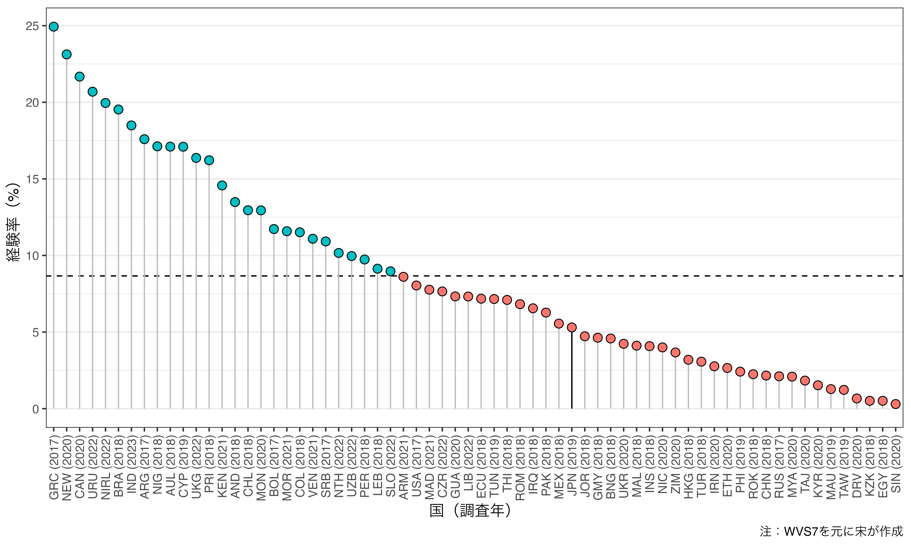
日本における投票外参加
- 請願書署名の経験率は50%を上回る。
- 2019年の場合は56.8%であり、当時の世界平均（23.8%）の倍以上
- その他の投票外参加は10%を下回る。
- 2019年の場合、世界平均を下回る。
- 請願書署名を除く活動は抗議的（プロテスト）な色彩が強く、請願書署名は比較的穏やかで、体制順応的な行為
- 穏やかな日本人?
- 請願書署名は要求される自発性、他人との連携などが投票参加並みに低いため参加しやすい（山田 2016）。
- 社会調査における社会的望ましさバイアスの存在
政治文化論（2024年度夏期集中）